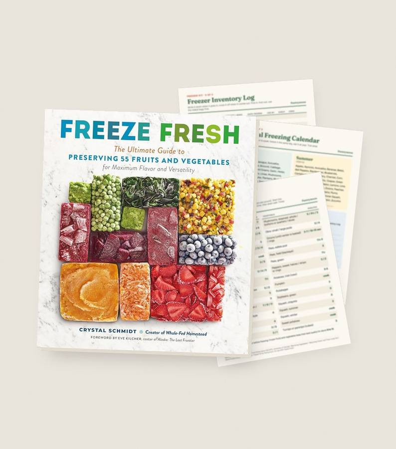
Freeze Fresh
4.8 · 6,928 reviewsThe gift for the gardener who grows too much: 55 fruits and vegetables, frozen bright and firm, not mushy.
Add to cart · $35This is a preview. Checkout is not connected yet.
- Free US shipping, arrives in 6 to 10 business days
- Order early for Christmas
- 60-day keep-the-book guarantee
Stop paying for food you throw away
Berries that turn to mush, greens that wilt in the crisper, bags of freezer-burnt beans. The EPA says the average family of four spends almost $3,000 a year on food that never gets eaten.
Freeze it at its peak
Buy in season or on sale, freeze it the same day, and eat summer produce in February.
Know when to blanch
Each food tells you whether to blanch, for how long, or whether you can skip it entirely.
Use what you froze
More than 100 recipes, from apple pie filling you bake later to basil pesto cubes for busy nights.
Look inside before you buy
Alphabetical, photo-filled pages: find the food, follow the steps.
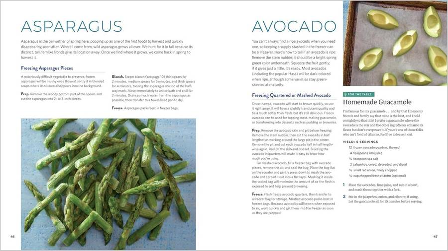
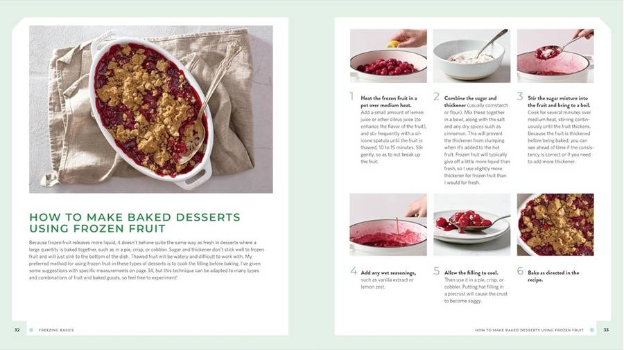
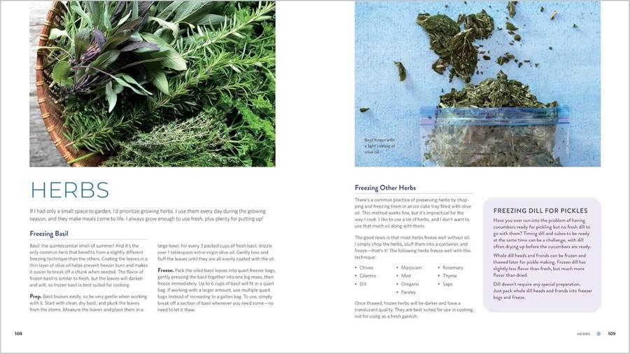
Only at Pantrymoon: the Freezer Kit
Three printables that turn the book into a system on your fridge door. Included with every order. In the 2 Books bundle each book gets its own kit.
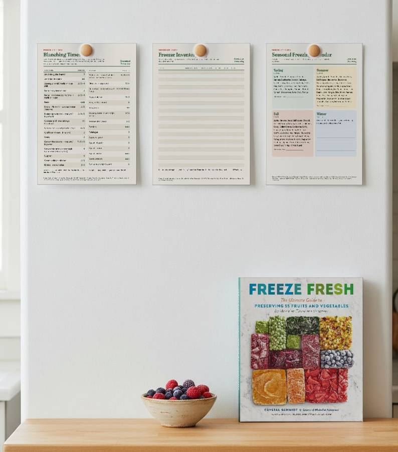
Blanching Times Fridge Chart
One page for the fridge door: blanching minutes for 33 vegetables, from the National Center for Home Food Preservation tables. Print it once, stop looking it up.
Freezer Inventory Log
Printable tracker: what went in, when, and when to use it. No more mystery bags at the back of the freezer.
Seasonal Freezing Calendar
Season by season: what is in season to freeze now, so sales and gluts end up in your freezer, not the bin.
Written by a homesteader, for home cooks
Crystal Schmidt is the creator of Whole-Fed Homestead, where she shares how to grow, preserve and cook with whole foods. The foreword is by Eve Kilcher, costar of Alaska: The Last Frontier. Published by Storey Publishing.
"A clear, concise guide to freezing (almost) anything, with mouthwatering recipes that will ensure you put your frozen bounty to good use. If you’re looking to create a healthier home food supply and save money in the process, this is your book!"
Jill Winger, author of The Prairie Homestead Cookbook
"So many possibilities! You'll welcome the recipes for foods such as potatoes and squash that can be tricky to preserve with other methods. And who knew you could freeze cucumbers?"
Sherri Brooks Vinton, author of Put 'em Up! and The Preserving Answer Book
Customer reviews
4.8 · 6,928 reviews
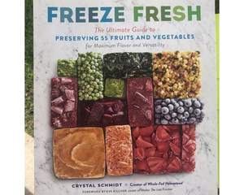
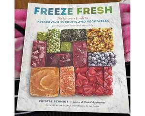
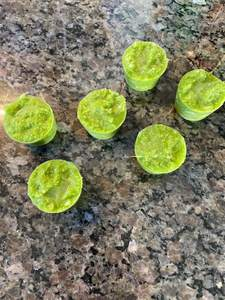
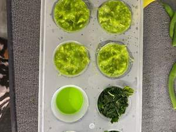
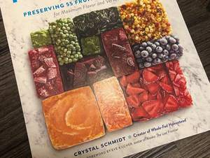
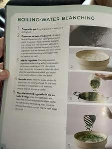
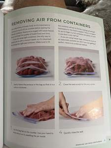
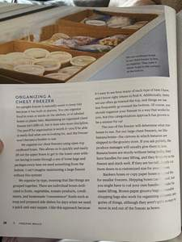
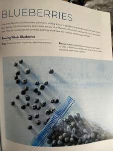
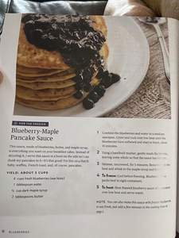
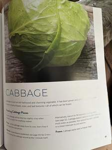
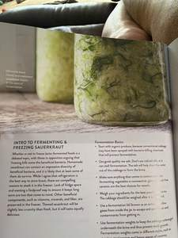
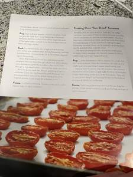
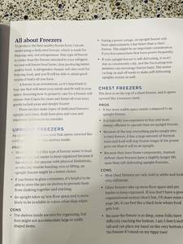
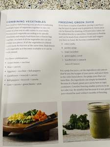
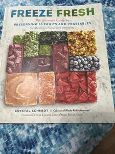
★★★★★Excellent information and easy to follow processes and recipes.Simone BroersmaI absolutely love this book and am so glad I bought it. It is so worth the money. We only have a small apartment size deep freezer right now so anything that will help save space in it is a winner in my opinion. Tried out one of the recipes as well and oh so yummy. I look at it a lot, now that my gardens are producing an abundance of food. And wild fruits are in season as well. So worth it. Cost didn’t matter. I had to have this book.
★★★★★Excellent resource for freezing produce!AmandaKayLove this book! It’s an awesome resource for anyone who wants to preserve fruits and veggies by freezing! The pictures are gorgeous, all the recipes look delicious, and the author explains everything in such a friendly tone! I’ve already picked out several things I want to try and ordered an extra copy to give as a gift!
★★★★★Freeze Fresh is an Amazing, Quality Book!!Vivian3This Freeze Fresh book is wonderful. First, the price is incredible for the quality! Second, it’s professionally printed with professional photography. Third, it gives so much great information for freezing properly! Fourth, it has great component recipes followed by great recipes to use those components! Fifth, all freezer recipes are in alphabetical order by the name of the fruit or vegetable so it’s easy to find the freezer recipes for say, potatoes and look up meal recipes for the potatoes. Couldn’t be better organized for easy use.
There is so much great information, component recipes and dinner recipes to use those components! Best cookbook I’ve received in a long time. I’ve returned many for poor quality. This is a keeper all the way. I will be ordering more books by Crystal Schmidt for sure. Very happy!
★★★★★Truly, I must have for any cook !Susan WivinusThis book is amazing. It not only tells you tools and things you’ll need but different ways of freezing fresh. It even tells you about different kinds of freezers plus all different kinds of food and recipes can’t wait to try them. !
★★★★★I am telling you…. You will love it alsoPaula KnightSo excited BEST BOOK EVER , on preserving so many items, colorful pictures, great detail, recipes… fruits and veggies
I love this book!!!
★★★★★You need this book!D.When Crystal announced she was writing a book I was SO excited. I have been following her for YEARS on instagram @wholefedhomestead. I started following when I just had 4 herb pots on my windowsill when Covid started and I wanted more stability with my food supply. She has taught me so much from starting seeds, growing my produce, fighting plant pest and disease, to preserving even before this book. I knew that this book would be a wealth of information, coming from her! This book literally covers something that no other preservation book covers. Freezing your produce, the best way to freeze it, and the best way to cook using those foods once they have been frozen, as all goods do change once frozen in some way or another. When I got the book in the mail I took a moment to flip through it and OMG. The pictures. I mean if I had not followed along her book journey on instagram to know this was all her food frozen, I would have thought it was photoshopped. Nothing I have frozen has even come out looking this beautiful. I started reading it and sure enough, it is just full of invaluable information. I skipped a little bit to make the blueberry maple pancake sauce and OMG. It did not disappoint. We have workers at the house I fed pancakes with the blueberry maple sauce this morning and they all loved it too. This book would be great for a beginner preserver who is too intimidated to pressure can! I even bought an extra to send to my friend! I can not wait to continue to read, gain more knowledge from, and eat more delicious recipes from this book. If your on the edge about buying this book, press that “buy now” button. I promise you won’t regret it!
★★★★★ArikaFreeze Fresh is an amazing book with everything you would need to get started on your food preservation journey. The author begins with a little history about growing your own food and how people preserved it in the past. I love to begin a book like this with a look at how it started and what has changed since, it makes me so grateful for modern practices! In the first half of the book we find different techniques showing how to freeze food for the best quality when defrosted. So much detailed information is shared on how to prevent freezer burn, what containers to use, helpful tools that will make the process easier for you. I learned SO much in these sections and the information was presented in a way that was not overwhelming and it was very easy to understand. I can’t wait to put what I have learned to use.
Once we get through all the tools/techniques, there is the section on “Freezing Produce From A-Z” which literally walks you through how to freeze every kind of produce you can imagine in multiple ways. This is a complete game changer for me! I have never even thought about trying some of the options our author gives us in this book. We then get to the last section of the book which is recipes that can be frozen, and they all look delicious!
What I appreciated most about this book is that the information is given in a way that is not overwhelming, it's exciting and organized, and makes me really believe I will be able to do all the things listed in this book. I am so excited to try out some of these new techniques I have read about. There are pictures all throughout the book that make it colorful and lively, and break up reading so much text. The pictures also provide an example of what the author is teaching in that section.
What a wonderful resource to anyone who is lucky enough to pick up this book, I will be buying some for friends and family as I know anyone who receives it will enjoy it!
★★★★★AmyWow, this is such a great book! I went into it to learn about freezing food...and there is GREAT information and guidance for how to do that .... but there is so much more!!
The book starts out with a very interesting history of freezing and then information about freezers with pros and cons. A lot of well researched information is explained that many people may not know. After that, the food section begins where the reader learns about choosing the ripest foods, how to prep the food for freezing, and then some fantastic recipes to use up the frozen foods.
It's obvious that the author has a lot of personal knowledge and experience in the kitchen, as well as the garden. There is some guidance on making many recipes gluten-free, along with substitutions for other variations on the original recipe. Very well thought out and accurate with recipes that are easy to follow and include needed guidance for those not overly experienced with cooking/baking.
I thoroughly enjoyed Fresh Freeze and recommend it for people looking for freezer information, but also great recipes.
★★★★★LittleReadI’m a sucker for a good deal and often get big baskets of fresh produce in season from my local farmers markets. My only regrets are that I sometimes can’t use it all. Then winter comes around and I really wish I had some of those fresh berries, or beans or corn, etc. this book is going to change things now that I better understand what freezes well, what may be better cooked vs just frozen for later, and just how to perfectly prep it for a winter treat.
The author provides great detail in her instructions along with plenty of pictures. In some of them, I felt like I was seeing my Grammy’s containers from her freezer…what great memories they invoked. I’m going to be ready for Summer’s bounty this year and my family will reap the rewards right along with me. I highly recommend this book for anyone interested in doing the same. It’s a great resource!
★★★★★StacyIf you want to freeze fruits and vegetables, this is the book for you. It has alot of information but not in an overwhelming way.
The book starts off with why freezing fruits and veggies are a good thing and then explains the various techniques, types of containers that work best, and other supplies you may need. Then it lists the fruits/veggies from A to Z instructing you how to prep, freeze, and if there are any special thawing instructions. There are also some recipes to make with the frozen ingredients. My personal favorite was the Banana Cake with Brown Sugar Frosting. It was so good and didn't last long. I also learned you can freeze lemon zest which means I don't have to waste part of the lemon when I just need the juice so there's less waste.
What you get
- Freeze Fresh: The Ultimate Guide to Preserving 55 Fruits and Vegetables, paperback, 208 pages, full color
- Methods for 55 fruits, vegetables and herbs
- More than 100 recipes
- Freezer Kit printables with every order, sent by email
- Free US shipping. Arrives in 6 to 10 business days.
Our guarantee
Cook from it for 60 days. If it does not earn its place in your kitchen, email us and we refund you in full. Keep the book.